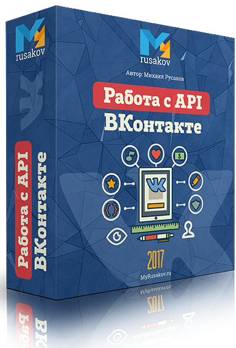
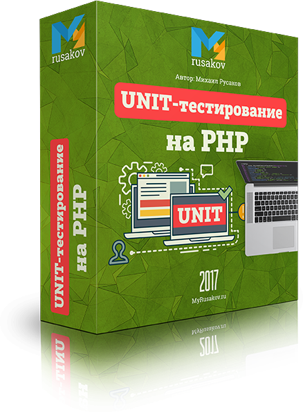

Установка локального сервера
4. Настройка и разбор возможностей OpenServer
Основы языка PHP
1. Hello World
5. Константы
Примечание: Если забыли, как использовать тег <style>, то посмотрите здесь: http://htmlbook.ru/html/style
Примечание: Всё это с помощью конструкции if -else.
10. Цикл for
Примечание: Факториал n = 1 * 2 * 3 * 4 * 5 * … * n, а факториал 0 = факториал 1 = 1
13. Массивы и списки
14. Цикл foreach
Примечание: Для поиска среднего надо найти сумму возрастов всех сотрудников, а потом разделить эту сумму на их количество.
16. Функции
17. Область видимости переменных
Примечание: Ключевой строкой будет что-то типа этого: return $a * func($a, $b – 1); - то есть углубляться внутрь до тех пор, пока $b не станет равной 0. Когда это будет, возвращаем 1 и начинаем подниматься вверх вплоть до выхода.
20. Генераторы
22. Массив $_SERVER
Примечание: Все эти данные можно получить из массива $_SERVER. Если забыли, какие ключи и за что отвечают, то выведите его с помощью print_r().
23. Обработка форм
Примечание: Должно получиться что-то наподобие этого: пришла строка «Моя строка», а выйти в браузер должно: «о тоа».
24. Инструкции include и require
Стандартные функции PHP
Примечание: Например, пользователь ввёл: «Моя строка – это очень длинная строка» и «строка». Должно появиться следующее: «Моя строка – это очень длинная строка»
3. Функции для работы с массивами
4. Функции для работы с датой и временем
5. Функции для работы с файлами
Примечание: Используйте sleep() и/или длинные циклы.
8. Функции для работы с каталогами
11. Регулярные выражения. Часть 1
12. Регулярные выражения. Часть 2
13. Регулярные выражения. Часть 3
Примечание: Полная аналогия с уроком, только заменяются не e-mail, а именно ссылки.
Объектно-ориентированное программирование в PHP
2. 3 кита ООП
4. Конструктор, деструктор и методы
Примечание: Вы должны самостоятельно понять, как убедиться, что всё работает верно: какие методы надо выполнить и какие выводы в браузер сделать.
6. Статические свойства и методы
Примечание: Обязательно выводите различные предупреждения. Например, при попытке «Загрузить» ещё не сохранённый объект или сохранить без заполненных или некорректных полей x и y. Также выводите информацию об успешном сохранении и об успешной загрузке.
9. Механизм наследования и абстрактные классы
10. Интерфейсы
11. Трейты
Примечание: Для использования классов Вы можете использовать как use, так и писать полный путь. Также можно комбинировать эти способы.
13. Импортирование и автозагрузка классов
Обработка ошибок и исключений
2. Оператор @
Примечание: Обратите внимание, что в методе validEmail() лишь выбрасываются исключения, а уже обработка (то есть блок try-catch) должна быть там, где вызывается этот метод.
5. Класс Error
Стандартные классы PHP
1. Классы для работы с датой и временем
2. Итераторы
Примечание: Например, в rewind() Вы должны написать $this->index = 0; В current() - return $this->list[$this->index] и так далее.
Примечание: Безусловно, нужно использовать класс IntlChar и цикл. Количество итераций необходимо установить экспериментально. Сама таблица должна быть выведена через теги <table>, <tr> и <td>.
7. Отражения
Примечание: Безусловно, здесь потребуется использование циклов.
Сетевые функции в PHP
5. Разбор URL
Примечание: Обязательно используйте функции для работы с URL.
Расширения PHP
2. Проверка данных на валидность
Примечание: Для корректности проверки Email и URL используйте filter_var().
3. Работа с изображениями. Основы
4. Работа с изображениями. Графические примитивы
5. Работа с изображениями. Текст
Примечание: Это хоть и достаточно сложное упражнение, но безумно полезное. Оно научит Вас правильно парсить сайты и собирать с них необходимую информацию, а также сохранять её для последующего анализа и использования.
База данных и СУБД MySQL
1. Что такое база данных, SQL и MySQL?
2. Управление базой данных через phpMyAdmin
3. Создание базы данных, таблиц и добавление записей
Примечание: offset может быть как положительным, так и отрицательным.
4. Индексы
5. Импорт и экспорт БД в phpMyAdmin
6. Подключение к MySQL через PHP
7. Создание базы данных через PHP
9. Добавление записей в БД через PHP
Примечание: Мы обязательно будем рассматривать и обновление, и удаление записей. Но мне бы очень хотелось, чтобы Вы научились получать новые знания самостоятельно. Поэтому попытайтесь освоить этот материал сами.
10. Выборка записей из БД через PHP
11. Расширение PDO
Примечание: Всего будет две формы на одной странице. Всё общение с базой данных делайте с использованием расширения PDO.
Компоненты
3. Ипользование компонента Monolog
4. Установка и использование компонента PHP_CodeSniffer
Примеры программирования на PHP
Примечание: На одной странице будет и форма для загрузки новых аудио-файлов, и множество плееров для проигрывания того, что уже загружено.
Примечание: Все данные о пользователях должны храниться в соответствующей таблице. Все пароли должны быть хэшированы через md5(). После успешной авторизации должно выводиться: «Здравствуйте, $name». В форме регистрации должны быть следующие поля: имя, логин, пароль и текстовое поле для ввода капчи. Обязательно реализуйте функцию выхода. Данные об авторизации храните в сессии.
3. Паттерн Model-View-Controller (MVC)
4. Ajax и JSON
Примечание: Эту задачу, безусловно, можно и вовсе реализовать без Ajax (заранее выведя на странице все часовые пояса и смещения по времени в «скрытом» теге или в переменных самого скрипта на JavaScript). Однако, Ваша задача будет получить данные из формы, отправить их на сервер, на сервере получить время в заданном часовом поясе, вернуть его обратно в JavaScript, где уже вывести его на странице у пользователя.
5. Создание системы голосования
Примечание: Обратите внимание, что при выводе заказов в таблице в столбце «Заказанные товары» должны выводиться именно названия заказанных товаров, а не просто их ID.
6. Заключение
Бонус №1. Работа с API ВКонтакте
Бонус №4. UNIT-тестирование на PHP
Полная версия курса
"PHP и MySQL с Нуля до Гуру 2.0"
Данный курс научит Вас программировать на самом популярном Web-языке в мире - PHP. Курс состоит из 11 разделов, в которых с нуля рассказывается и показывается процесс написания различных скриптов на PHP.
В курсе Вы узнаете всю необходимую теоретическую часть, а также увидите массу практических примеров, в том числе, и из моей практики.
Почти к каждому уроку идут упражнения.
Просмотрев данный курс, Вы сможете создавать абсолютно любые PHP-сайты любой сложности.